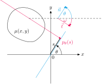

Tomographic notes 1 Geometric conventions
When having reconstruction problem, from the perspective of mathematican, you do not start thinking about geometric conventions. Why should we think about them when algorithms like FBP don't care about the initial position of the detector or whether the x-axis is aligned to the center of the Earth, orthogonal to it or otherwise? I usually start thinking about this when debugging the code and would like to figure out what the initial possition of the detector was, how the word coordinates in the volume are specified and how it comes that other tools produce the reconstruction that is 90 degrees rotated to my tool? Another situation where you need to think about the geometry is when you give your data to the physician or radiologist. They are used to interpret the data in the frame of reference, where the z axis goes from the foots of the patient to his head, where the y axis has the same direction as the Earth gravity and xyz is right handed coordinate system.
Radon transform
If you had basic tomography class in school, you probably first learned about 2D Radon transform and its inverse, filtered backprojection. Let's start our considerations about the geometric conventions here. We have $\mathbb{R}^2$ Carthesian system denoted by coordinates $(x,y)$ and some compactly supported function $\mu(x,y)$. We would like to transform $\mu(x,y)$ and create the function, which for each line through $\mathbb{R}^2$ gives us line integral of $\mu(x,y)$. Now the question is how to parametrize any line through $\mathbb{R}^2$ and here comes the first convention
Radon transform geometry. Red ray denote the path of integration while $\theta$ and $s$ identify the position, where the ray hits the blue detector.
When we subscribe to parametrizing lines through $\mathbb{R}^2$ by $(\theta, s)$ it is also natural to say $\theta \in [0, \pi)$ $s \in (-\inf, \inf)$. Then the normal to these lines will be $\vec{n} = (cos \theta, sin \theta)$ and the ray direction $\vec{t} = (sin \theta, -cos \theta)$. Now let's say $\vec{n}$ will be positive direction of the x axis of the detector, $\vec{t}$ will be direction of incomming rays and $\theta=0$ will be initial configuration when the detector is aligned with the x axis of the word coordinates, we have a convention!
Now we can start interpreting Radon transform $$ p_\theta(s) = \int_{-\infty}^{\infty} \mu( s \vec{n} + q \vec{t}) \, dq = \int_{-\infty}^{\infty} \mu( s \cos \theta + q \sin \theta, s \sin \theta - q \cos \theta) \, dq $$ as a value of the extinction related to the position $p$ on the detector tilted by $\theta$ from the $x$ axis. Note that the vector $\vec{n}$ is tangent to the detector and $\vec{t}$ is normal to the detector as these vectors were introduced to describe lines through $\mathbb{R}^2$, which are now interpretted as a rays orthogonal to the detector.
In this package we sometimes use the angle $\omega$ related to the $\theta$ so that $\omega = \theta - \pi/2$.
Physican convention
The orientation of the axes of the 3D patient volume tend to be
 Usual CT/MRI word frame of reference for the volume, z axis goes from the foots of the patient to his head, the y axis has the same direction as the Earth gravity and xyz is right handed coordinate system.
Usual CT/MRI word frame of reference for the volume, z axis goes from the foots of the patient to his head, the y axis has the same direction as the Earth gravity and xyz is right handed coordinate system.
The choice of (x,y) coordinates is in fact natural for visualizing on the monitor, where the convention is that coordinates start at top left corner and y axis goes from top to down.
 Usual convence to index monitor pixels or pixels in the image. Zero is at top left corner, x goes to the right y goes to the bottom. Image source.
Usual convence to index monitor pixels or pixels in the image. Zero is at top left corner, x goes to the right y goes to the bottom. Image source.
Storing the projections
For 2D scanner we simply take the (x,y) and relate them to PX axis of the detector. Word coordinate z is related to PY but how? This is actually the tricky part.
In medical data, when we store it in a same way as in CT volume, then bottom of the patient goes first to the top of the image and his top goes down. So the visualization would be updside down. Therefore in medical praxis, the projections are stored from the top of the patient to the bottom, which is oposite to the direction of the z word coordinates axis.
For samples in material sciences and in industrial CT we actually do not have that strong feeling what is upside down and upside up. Sometimes we just prefer to relate word coordinates z direction directly to PY coordinate on the detector, namely when we do slice-wise reconstruction of parallel beam scan. In this situation we might prefer geometry where these directions are not opposite.